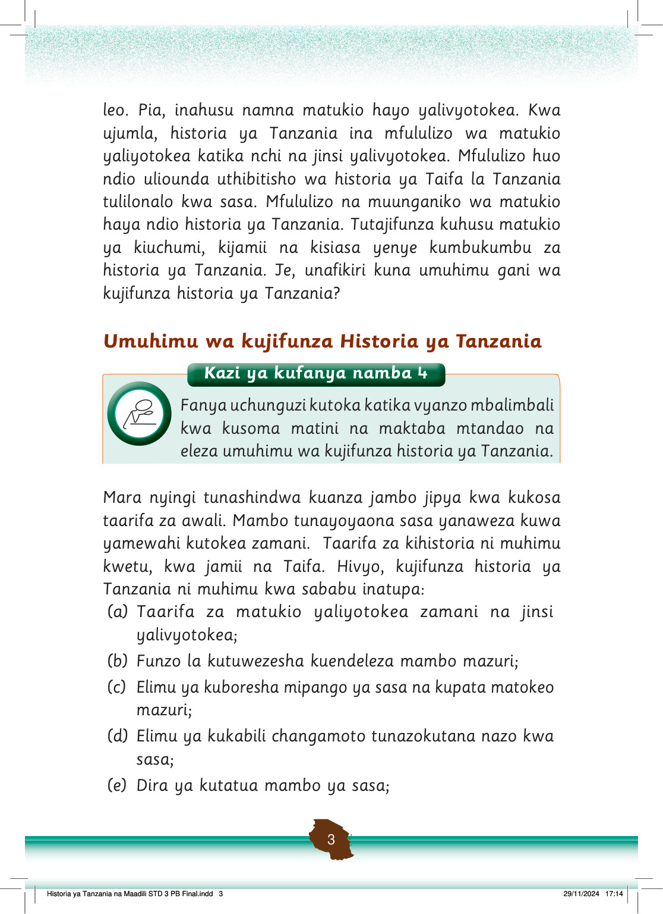

(f)
Sababu ya kufanya maamuzi sahihi kwa sasa;
(g)
Kukuza na kulinda uzalendo kwa sasa;
(h)
Kuthamini historia kama sehemu ya urithi wa Taifa; na
(i)
Kukuza na kulinda mila na desturi kama sehemu ya maadili yetu.
Vyanzo vya Historia ya Tanzania
Tunaweza kupata taarifa za historia ya Tanzania kutoka katika vyanzo mbalimbali ikiwemo kusikiliza masimulizi au kusoma vitabu.
Pia, katika makumbusho ya Taifa na binafsi na maeneo yenye hifadhi za nyaraka kuna taarifa za kihistoria.
Tunaweza kupata taarifa za historia kutoka kwenye taarifa za kianthropolojia, akiolojia na isimu historia.
Vilevile, tunaweza kuuliza watu waliotangulia ili kupata taarifa hizi.
Vyombo vya habari na tovuti vinaweza pia kuwa ni vyanzo vya kupata taarifa hizo.
Vyanzo hivi vinawezesha kujifunza historia ya Tanzania ya nyakati tofauti kama vile kabla ya ukoloni, wakati wa ukoloni na baada ya ukoloni.
Dhana ya maadili
Maadili ni mwenendo au utendaji uliokubalika katika jamii.
Maadili hueleza matendo yanayofaa na matendo yasiyofaa katika jamii husika.
Maadili yanaweza kulenga katika tabia au matendo ya kufuata katika familia, shule, dini, jamii au Taifa.
Maadili huwezesha watu kuishi kwa kuzingatia utu, upendo na tabia njema.
Ujenzi wa maadili si jambo la muda
Historia ya Tanzania na Maadili STD 3 PB Final.indd 4
29/11/2024 17:14
Kazi ya kufanya namba 5
Soma vyanzo mbalimbali, ikiwemo maktaba mtandao, kuhusu maana ya maadili.